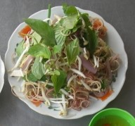

Tô bún nước lèo trong ảnh có nước dùng thơm ngon với mùi hương đặc trưng của mắm bò hóc.
Bún trong tô bún nước lèo là bún tươi, sợi nhỏ, mềm dai.
Trong tô còn gồm các món ăn kèm khác như thịt heo quay, chả giò, huyết,...mang đến sự thơm ngon và đa dạng thành phần trong món ăn.
Hay các loại rau ăn kèm như: giá đỗ, bắp chuối,... đã được rửa sạch.
Khát Quát Chung:
Món bún nước lèo, ngon và đặc biệt, luôn là sự lựa chọn hàng đầu của những người yêu thực phẩm tinh túy.
Đây là một món đặc sản của người Khmer, món bún nước lèo đã thăng hoa thành một tác phẩm nghệ thuật đỉnh cao, được ưa chuộng rộng rãi tại nhiều địa phương.
Tuy nhiên, bún nước lèo Trà Vinh mới thực sự đậm đà và độc đáo, khiến người thưởng thức không thể quên.
Bí quyết thành công của món ăn này bắt đầu từ việc chọn lựa mắm bò hóc, một loại mắm tinh tế được tạo ra có thể bằng nhiều loại cá khác nhau.
Mắm bò hóc là linh hồn của bún nước lèo, mang hương vị đặc trưng và tan chảy ngay khi tiếp xúc với nước sôi.
Thợ làm mắm phải tuân theo các tiêu chuẩn khắt khe, và thường sử dụng nồi đất để nấu mắm, giữ nguyên hương vị đặc biệt.
Nhiều người còn thêm vào nước lèo
dừa tươi
và
sả đập dập
để tạo ra một lớp hương thơm tinh tế.
Bún nước lèo không chỉ là một món ăn dân dã đậm đà, mà còn là một biểu tượng ẩm thực được người dân Trà Vinh tự hào trình diễn.
Không chỉ thu hút du khách địa phương, món bún nước lèo đã trở thành một biểu tượng của Trà Vinh khiến du khách từ khắp nơi biết đến và phải thử một lần.
Khám phá vùng đất sông nước trong buổi sớm và thưởng thức một tô bún nước lèo nóng hổi là một trải nghiệm khó quên, đưa người ta vào từng cung bậc của một cuộc hành trình vị giác.
Cách làm Bún nước lèo:
Cách làm truyền thống:
Nguyên liệu:
1.
Bún tươi
2.
Mắm bò hóc
: 400g
3.
Nấm rơm
: 300g
4.
Ngải bún
: 50g
5.
Sả cây, sả băm, ớt
6.
Huyết heo
: 500g
7.
Cá lóc
:1 con
8.
Rau ăn kèm:
Bắp chuối, giá ,hẹ,...
9.
Gia vị
(Đường, muối, bột ngọt,...)
Các bước thực hiện:
Bước 1: Sơ chế nguyên liệu
Xả cây đem đập cho dẹp lại để tạo hương thơm.
Phần ngải bún chia làm 2 phần một phần cạo sạch vỏ rồi đem băm nhỏ cùng với ớt và cho vào chung với phần sả bằm, phần còn lại đem nướng cho thơm lên.
Đem 300g nấm rơm đi vệ sinh sạch vỏ rồi đem đi rửa sạch lại. Sau đó đem nấm rơm đi cắt nhỏ. 500g huyết heo ta đem rửa sạch và cắt thành từng miếng nhỏ vừa ăn và đem luộc sơ.
Lấy tất cả các loại rau ăn kèm đem đi rửa và cho vào nồi và trộn đều lên.
Bước 2: Luộc huyết
Ta bắc nồi nước sôi và đem luộc sơ phần huyết qua để không bị tanh.
Bước 3: Nấu nước lèo
Cho 400g mắm bò hóc vào nồi và nấu đến khi mắm sôi và tan ra. Đến khi mắm dậy hương và tan thịt ra thì chúng ta tắt bếp.
Bắc nồi nước 4 lít, cho phần xả cây đã đập vào trong nồi. Đến khi nước sôi ta cho cá lóc, phần xả bằm sau khi trộn và phần ngải bún đã nướng đập dập bỏ vào nồi.
Sau khi sôi một thời gian thì phần cá trong nồi đã chín, chúng ta vớt hết tất cả cá ra và cho phần nấm rơm vào.
Lược phần mắm đã nấu sôi vào nồi. Cho vào thêm 1,5 muỗng cà phê bột ngọt.
Phần cá đã vớt ra chúng ta tiến hành tách thịt chúng ra và hãy nhớ là đừng để xót xương nhé. Ta cho phần huyết sau khi luộc và cá đã tách thịt vào nồi nước lèo.
Vậy là chúng ta chỉ cần chờ nước sôi thêm khoảng 5 phút là có thể thưởng thức rồi.
Nguồn: trích từ kênh youtube: ALO TRÀ VINH
Cách Làm Biến Tấu:
Bún nước lèo Trà Vinh, một món ăn biểu tượng của miền Nam Việt Nam.
Cái bát bún thơm nức, nước lèo ngọt lịm tạo nên một vũ trụ hương vị không thể chối từ.
Nhưng câu chuyện này không dừng ở đó. Ở vùng đất sáng tạo của con người Trà Vinh chúng ta, mọi người luôn sẵn sàng làm mới và cải tiến.
Bún nước lèo Trà Vinh đã trải qua một cuộc hóa thân đầy sáng tạo, biến đổi thành vô số phiên bản để đáp ứng sở thích và nhu cầu của từng thực khách.
Bún nước lèo chay,
đưa tâm hồn vào món chay ngon mê mải, với nước dùng thơm ngon và tinh tế từ rau cải và nấm.
Bún mắm nước lèo, thay vì nước lèo truyền thống, bún mắm đưa vào món ăn một vị mặn đậm đà, đang hòa quyện với bún và hải sản.
Bún nước lèo gỏi cá và thịt nướng, một sáng tạo độc đáo, đánh thức vị giác với sự hòa quyện giữa cá sống và thịt nướng thơm phức.
Bún nước lèo cá linh, hương vị đặc trưng của cá linh được lồng vào bát bún nước lèo, đem đến một cảm nhận mới mẻ.
Cuối cùng, bún nước lèo kiểu đặc biệt của nhà hàng và quán ăn, là sự sáng tạo tinh tế của các đầu bếp, để đảm bảo mỗi bát bún là một tác phẩm nghệ thuật độc đáo.
Bún nước lèo Trà Vinh không chỉ đơn thuần là một món ăn, mà còn là một biểu tượng của sự đa dạng, sáng tạo và sự kết hợp của nhiều hương vị khác nhau.
Khi đặt chân đến Trà Vinh, bạn không chỉ thưởng thức một món ăn ngon, mà còn trải qua một cuộc hành trình khám phá sự phong phú và độc đáo trong ẩm thực đất vùng này.
Cách Pha Nước Chấm:
Giấm ớt:
Ta bắc nước cho vào ½ muỗng canh muối sau đó cho ớt vào luộc khoảng 2 phút.
Cho vào 100ml giấm 1 muỗng canh đường, 1 muỗng cà phê bột ngọt khuấy cho tan đều ra.
Phần ớt sau khi luộc ta đem cho vào máy xay cùng với tỏi.
Xay nhuyễn sau đó cho vào cùng với hỗn hợp nước giấm vừa pha là chúng ta đã có cho mình 1 hỗn hợp giấm ớt tươi ngon để làm món ăn thêm ngon bùng nổ vị giác.
Nguồn: trích từ kênh youtube: Sống Khỏe
Muối ớt:
Ta cho muối hột vào nồi rang.
Khi vừa rang vừa đập. Đến khi muối nhuyễn và khô dần ta cho ớt xay vào cùng ta rang và đảo đều cho ớt thấm đều vào muối và hãy nhớ là đảo đều vì không đảo muối sẽ bị cháy.
Sau khi hỗn hợp muối đã rang đều, ta cho bột ngọt xay nhuyễn vào. Khoảng 3-5 phút hỗn hợp muối đã có mùi thơm cay bừng lên thì ta tắt bếp và có thể bỏ vào hũ để bảo quản.
Nguồn: trích từ kênh youtube: Anh Lee BTR
Thưởng Thức Thành Phẩm:
Lấy tô, bạn chọn từng sợi bún mềm mịn, lấp đầy tô. Cho vào đó rau sống,
bắp chuối,
rau muống tươi ngon và
bông súng
giòn rụm, kết hợp tạo nên một bức tranh tự nhiên tươi đẹp. Khi bạn múc từ
nồi nước lèo
nóng hổi, từng giọt nước lèo xâm chiếm không gian và tạo ra một mùi thơm đặc trưng, làm nồi bún nước lèo trở nên cuốn hút hơn bao giờ hết. Người ăn có tự do để tùy chỉnh khẩu vị của mình. Có thể thêm nước giấm ớt, giúp món ăn trở nên chua cay và ngon miệng hơn.
Bạn cũng sẽ không thể bỏ lỡ các món ăn kèm hấp dẫn như
thịt heo quay
và
huyết,
chả giò
. Thịt heo quay thơm ngon, còn huyết sẽ được vớt ra và chấm vào nước giấm ớt, tạo ra một hương vị cực kỳ thú vị. Ở Trà Vinh, những người làm bún nước lèo còn kỹ tính hơn nữa khi chế biến
rau ghém,
bắp chuối, rau muống và bông súng được bào nhỏ gọn, tạo ra một sự hòa quyện đặc biệt.
Vào mùa điều, người ta thậm chí còn băm một ít hạt điều để trải lên rau ghém, tạo nên một
vị ngon khó cưỡng
. Bún nước lèo Trà Vinh không chỉ là một món ăn bình dân thông thường mà còn là một tác phẩm nghệ thuật ẩm thực đậm đà, độc đáo.
Khi bạn có cơ hội ghé thăm vùng đất này, hãy tạm gác lại mọi lo âu và dừng chân tại một quán ăn ven đường, gọi một tô bún nước lèo và thưởng thức, bạn sẽ hiểu rằng món ăn này không chỉ là thức ăn, mà còn là một phần không thể thiếu trong hành trình khám phá vùng đất đầy ấn tượng này. Đừng bỏ lỡ cơ hội trải nghiệm hương vị đặc sản bún nước lèo, món ăn độc đáo và tinh túy của Trà Vinh.
Giá Cả: Dao động từ 12.000đ-20.000đ.
Nhưng giá có thể tăng nếu bạn ăn thêm các món phụ ăn kèm như heo quay, chả giò, huyết,...